我是資訊管理系的學生，仍在持續學習。大學期間接觸了程式開發與資料分析，也在班級與系學會中練習溝通與協調。
這個網站整理了我做過的專案與校園經歷，也記錄做得不夠好的地方，以及下次我會怎麼改進。我還有許多需要加強之處，希望能在實習與工作中繼續學習。
在投入班級、系學會與多項專案的同時，維持穩定的學業表現。
擔任同學與系上、師長之間的溝通橋樑。
負責系學會的行政運作與內部協調。
參與近 250 人規模的跨系迎新活動。
協助系辦日常行政與庶務。
以動手創作作為課業之外的平衡與充電。
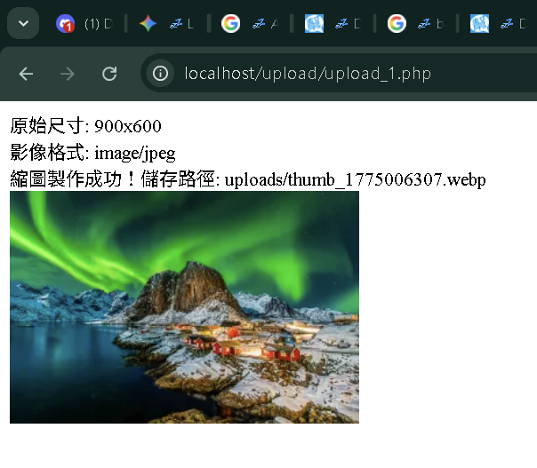
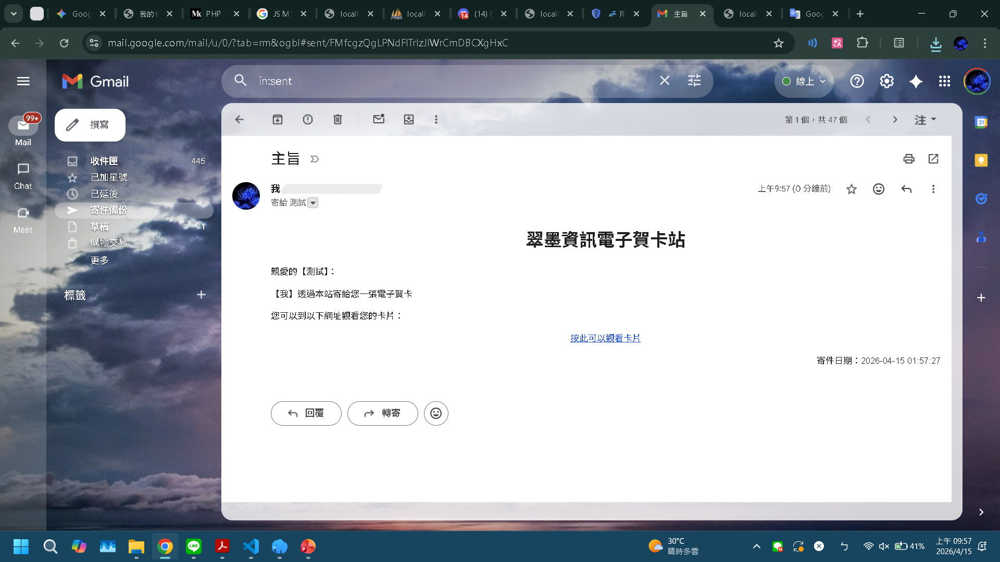
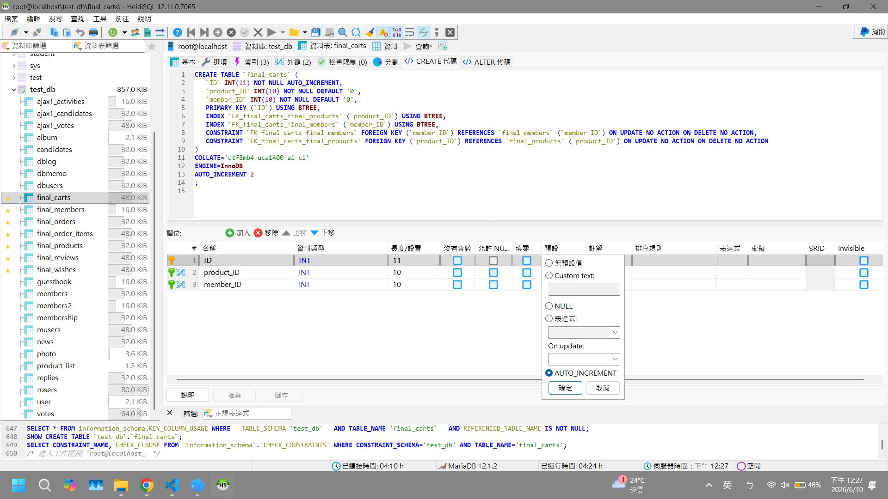
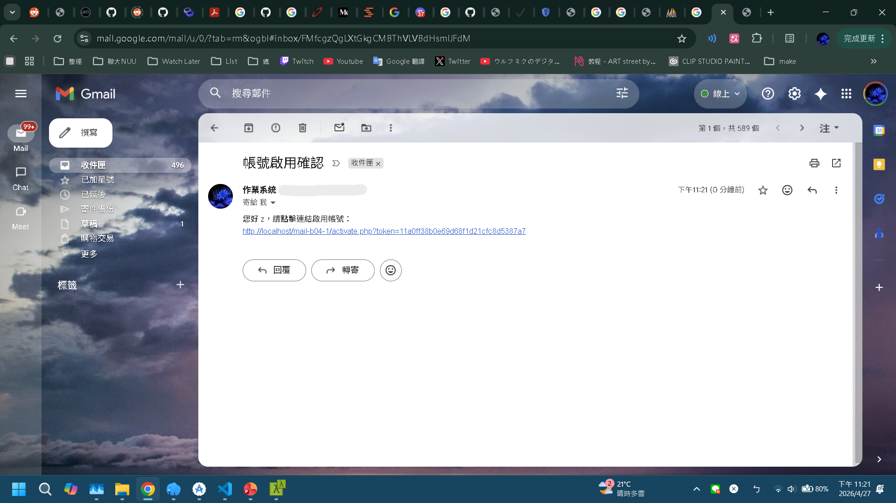
✔ 完成含會員註冊驗證、購物車與結帳的遊戲商店，並串接 Gmail API 寄送驗證信。
專案概述：
在 Laragon 本機環境下，從零建置一個具備完整會員註冊、購物車與結帳功能的遊戲商店平台。專案涵蓋前端介面互動、後端 PHP 邏輯處理、資料庫結構設計，以及外部 API 串接。
核心技術與解決方案：
final_carts、final_orders 等資料表，並設定 Foreign Key 確保訂單與會員資料的完整性。個人經驗：第一次獨立串起前端、後端與資料庫，從畫面操作到寄信驗證都親手完成。
我學到的東西：後端邏輯、關聯式資料庫設計、API 授權流程，以及基本的版本控制。
我負責的部分：圖片上傳與縮圖處理、資料表與外鍵設計、Gmail API 驗證信流程、Git 分支與 GitHub 推送。
我的反思：初期資料表設計不夠周全，頁面間以超連結跳轉時也容易遺漏資料或修改不完全，後來回頭修改相當費工。
下次我會怎麼做：動工前先畫出 ER 圖並列出欄位與關聯，再開始寫程式；資料表的每次異動也用 SQL 檔與 Git 記錄下來。
* 展示影片與圖片皆可放大查閱。
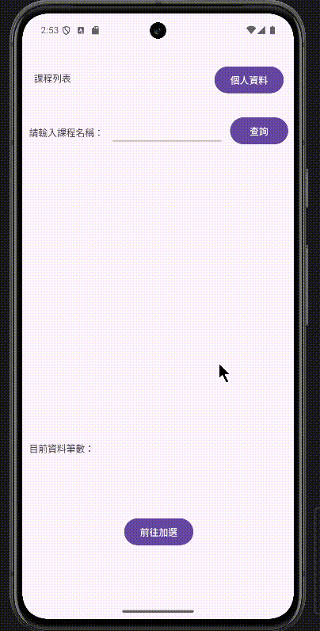
前往 GitHub📂✔ 獨立完成連線 MariaDB 的選課 App，區分管理員與一般使用者權限。
專案概述：
獨立開發基於 Android 原生環境的校園選課應用程式。具備雙身分驗證機制，透過 JDBC 直接連線至 MariaDB 進行即時資料交換，提供課程查詢與管理功能。
核心技術與解決方案：
SharedPreferences 管理登入狀態，動態驗證 Admin 屬性以開放「新增課程」與「使用者管理」等後台功能。MariaDB 連線，嚴格運用 ExecutorService 於背景執行緒處理 SQL 查詢，防止主畫面卡頓 (ANR)。個人經驗：完整獨立做完一個 App，介面、邏輯與資料庫連線都靠自己摸索與除錯。過程中遇到本機同時安裝 MySQL 與 MariaDB， 兩者預設都使用 3306 埠號而衝突；我釐清佔用埠號的服務後，將其中一個改用 3307，並同步修改 JDBC 連線字串。
我學到的東西：Android 開發流程、非同步處理、角色權限設計，以及閱讀錯誤訊息自行排查問題。
我負責的部分：全部功能獨立開發：登入與角色權限、SharedPreferences 登入狀態、ExecutorService 背景查詢、ListView 與模糊搜尋。
我的反思：畫面卡頓與連線錯誤讓我體會到，執行緒設計與環境設定都會直接影響使用者體驗。
下次我會怎麼做：一開始就把連線設定（host、port、帳密）集中在單一設定檔，並在連線失敗時顯示明確的錯誤提示，方便快速排查。
* 展示畫面以gif呈現。
✔ 部署可線上試用的 arXiv 論文趨勢網頁，提供常見研究片語與年度發文趨勢。
專案概述：
基於 Streamlit 的互動式資料探勘網頁應用，能自動透過 arXiv API 抓取指定領域的最新學術論文，並運用自然語言處理 (NLP) 技術進行詞彙分析與趨勢視覺化，協助研究者快速掌握研究趨勢。
核心技術與解決方案：
requests 與 xml.etree.ElementTree 即時抓取 arXiv API 回傳的 XML 結構，並過濾出標題與發表年份。NLTK 進行斷詞 (Tokenization)、詞形還原 (Lemmatization)，並提供客製化停用詞 (Stopwords) 過濾功能，萃取 Bigrams 與 Trigrams 的研究片語。Pandas 進行資料清洗與彙整，結合 Streamlit 原生圖表展示「Top 20 常見研究片語」與「年代發文趨勢」。
更開發了自動趨勢分析邏輯，依據論文時間跨度與密度，系統會自動給予「高動能 (爆發期)」、「中動能 (穩定發展)」或「低動能 (冷門領域)」的具體研究建議。個人經驗：起點是「找研究題目很耗時」，我想做一個能直接線上試用的工具。
我學到的東西：NLP 前處理流程、資料視覺化，以及用 Streamlit Cloud 與 GitHub 部署成可分享的網頁。
我負責的部分：API 資料抓取與 XML 解析、NLTK 文本清理與 N-gram 萃取、Pandas 彙整、Streamlit 圖表與趨勢判斷邏輯。
我的反思：停用詞的設定會明顯影響結果，分析結果需要人工判讀，不能全盤相信程式輸出。
下次我會怎麼做：先用小樣本比較不同停用詞設定，記錄參數與結果，並抽樣閱讀論文摘要交叉驗證後，再決定最終設定。
* 請點擊圖片放大檢視專案實作畫面。
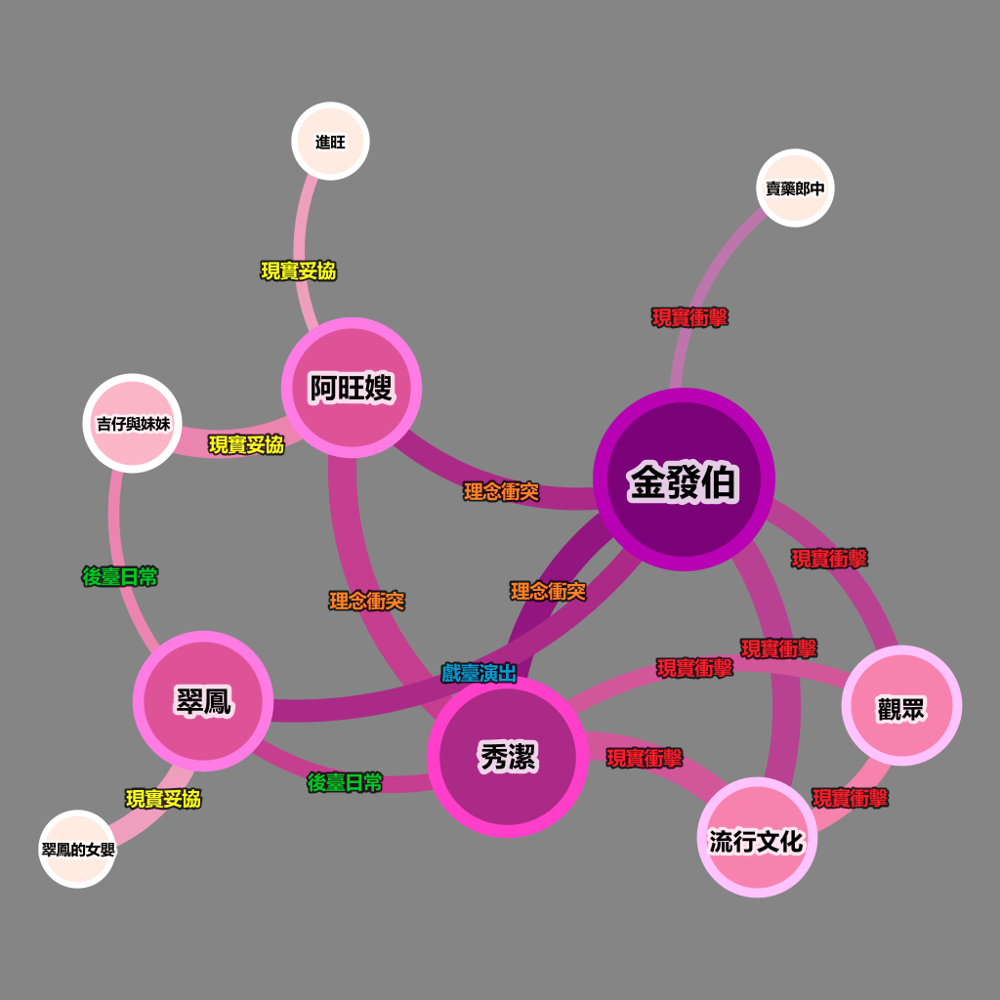
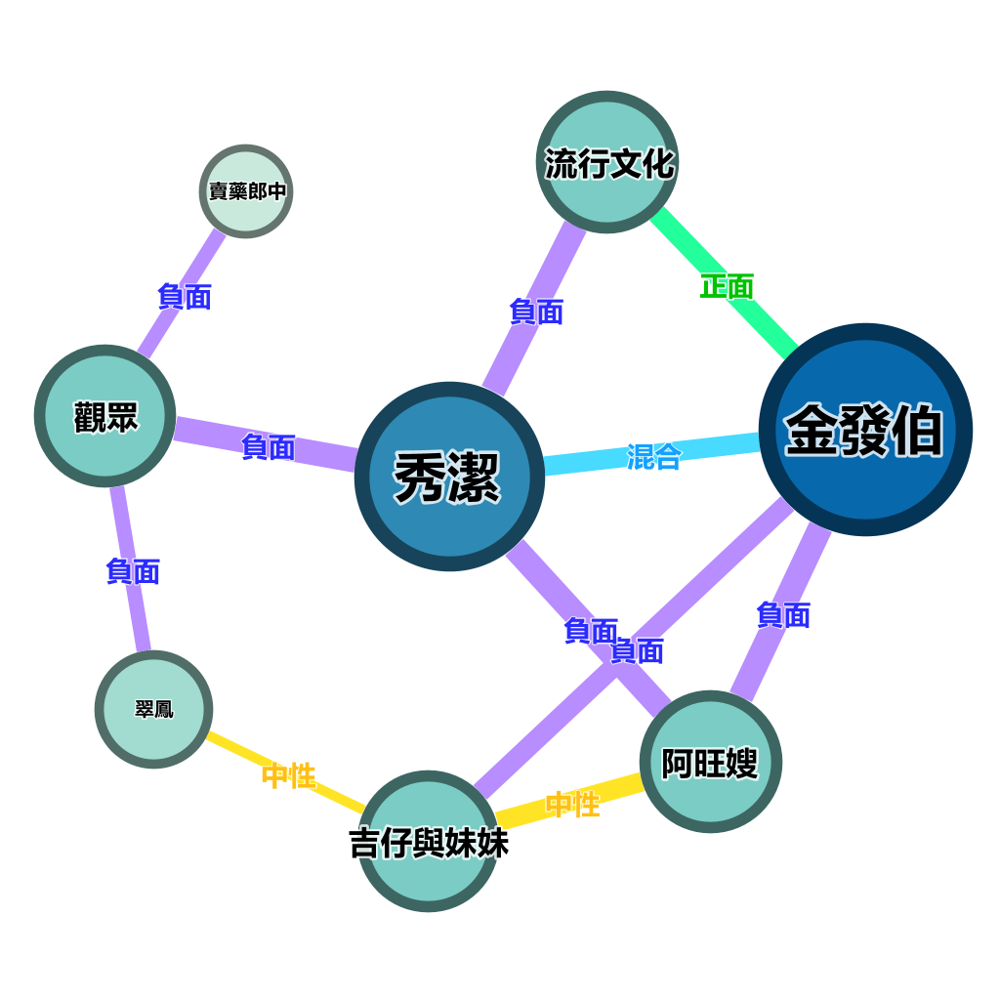
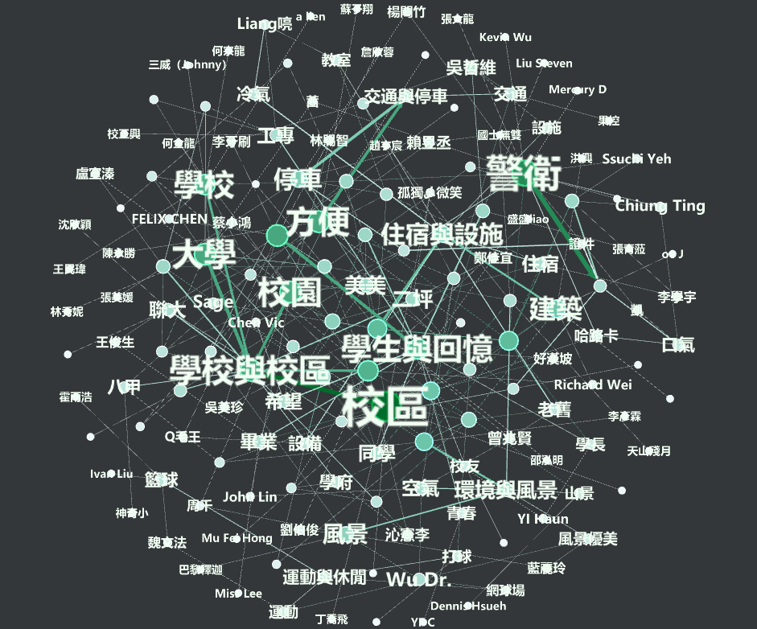
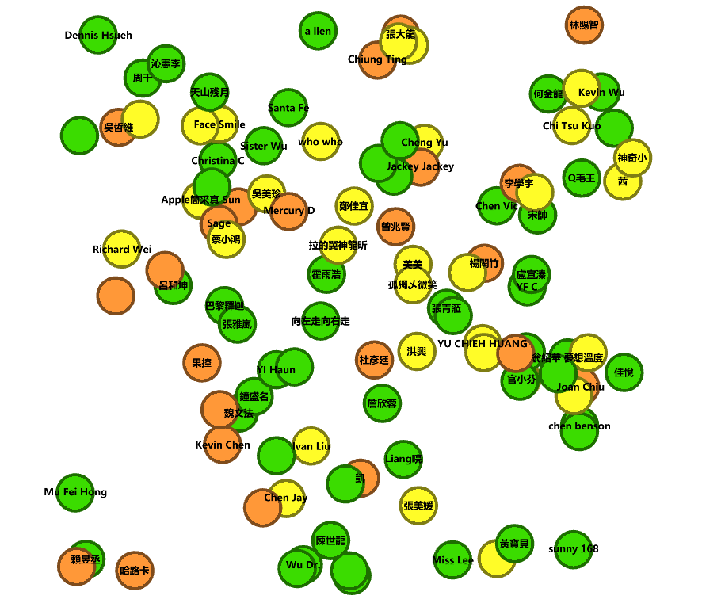
✔ 完成兩份網絡分析：《散戲》角色關係，以及二坪山校區 Google 評論的關鍵字與情緒分佈。
專案概述：
運用 Gephi 進行文本的社會網絡分析，目前完成兩個主題：
(1) 透過角色網路圖解析文學作品《散戲》背後的理念衝突與妥協；
(2) 對聯大二坪山校區Google評論進行關鍵字萃取與情緒輿情觀測。
核心技術與解決方案：
Nodes 與 Edges CSV 關聯矩陣。個人經驗：同時處理文學與評論兩種性質不同的文本，體會到網絡分析可應用在不同領域。
我學到的東西：社會網絡分析的基本流程、情緒指標設計，以及用視覺化呈現資料。
我負責的部分：將文本與情緒評分整理成 Nodes／Edges CSV、萃取關鍵字、設計情緒指標與視覺呈現。
我的反思：資料預處理比製圖更耗時，卻決定圖能不能被看懂，過程中需要反覆修改資料。
下次我會怎麼做：一開始就訂好欄位格式與命名規則，並用 Python 腳本自動轉檔，減少手動編輯與反覆修改。
* 圖片可點擊放大檢視。
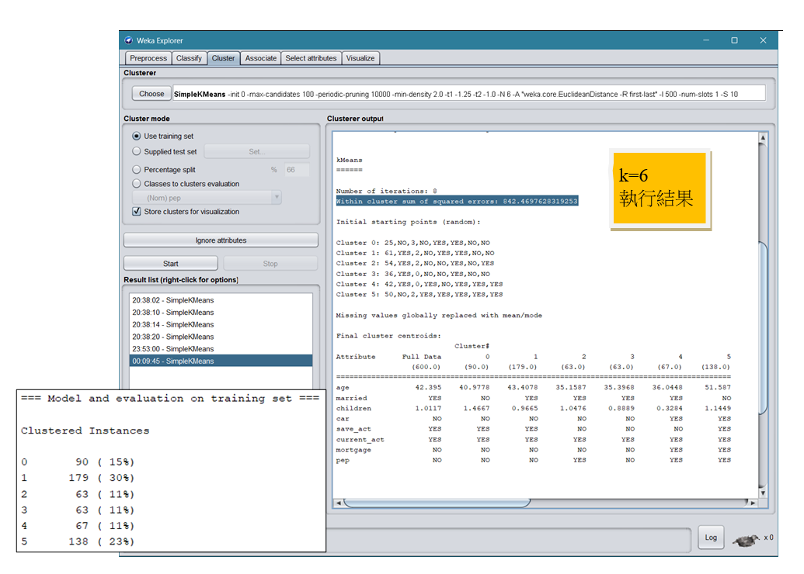
✔ 以 K-Means 將 600 筆銀行客戶分為 5 群，並提出對應的行銷建議。
專案概述：
在人工智慧概論課程中，運用 Weka 工具與 K-Means 演算法對 600 筆銀行客戶資料進行分群，藉由識別相似特徵客群，協助銀行提升行銷精準度與產品設計效益。
核心技術與解決方案：
sex（性別）欄位，再重新評估 K 值。K=5 較合理。個人經驗：這是我第一次完整跑過一次機器學習的分群流程。
我學到的東西：K-Means 分群、手肘法與 K 值評估、特徵選擇，以及將分析結果轉成商業建議。
我負責的部分：CSV 轉 ARFF、基於公平性考量移除性別欄位並重新評估 K 值、依手肘法判斷 K 值，並將結果整理成客群行銷建議。
我的反思：分群結果要能轉譯成商業語言才有價值；此外，移除性別欄位前後的特徵數不同，WSS 不能直接拿來比較好壞。
下次我會怎麼做：以相同特徵集比較不同設定，並加入輪廓係數等指標輔助判斷 K 值，而不只看 WSS。
* 圖片可點擊放大檢視。
✔ 完成「暖心伴伴」社企企劃，包含產品設計、營運架構與影響力評估。
專案概述：
針對台灣高齡化社會「孤獨與社交孤立」問題，策劃一家混合型社會企業「暖心伴伴」。提出結合 AI 語音輔助與情緒偵測的珠寶造型智慧手環，並設計對應的營運模式與影響力評估。
核心貢獻與企劃亮點：
個人經驗：在社會關懷與商業可行性之間，學著找到能長久運作的平衡點。
我學到的東西：商業模式設計、社會影響力評估，以及跨界合作的提案方式。
我負責的部分：產品核心功能與珠寶造型構想、免費版與訂閱制模式、公司＋基金會架構、影響力評估表。
我的反思：社企不能只靠善意，也必須讓財務能自給自足；而我們的企劃多半停留在構想，缺少實際驗證。
下次我會怎麼做：企劃階段先用簡單試算驗證訂閱價格與成本，並訪談實際的長者與照顧者，確認需求後再設計功能。
* PDF簡報可使用Acrobat展開檢視。
✔ 提出「我的日常我來修」平台提案，並回應評審對安全與黃牛問題的提問。
專案概述：
於創意思考方法課程中發想的服務平台，針對「老舊家電維修成本高、資訊零散、具備回憶價值」的痛點，結合 AI 智能診斷、零件市集與真人維修論壇，建立互助修繕生態圈，並考量了維修安全防護機制與市場防黃牛管理。
創意發想與邏輯收斂過程：
個人經驗：組員點子很多、遲遲難以決定時，我們靠心智圖與 KJ 法讓討論逐步收斂。
我學到的東西：KJ 法、心智圖、SCAMPER，以及主動思考風險與防護機制。
我負責的部分：負責簡報中兩頁：（1）「創意思考發源地：產線紀錄」——整理課堂討論的原始紀錄（心智圖、KJ 法分類、便利貼與分析矩陣），呈現點子如何從發散一步步收斂； （2）「跨組診斷與修復矩陣」——將同儕與評審指出的缺點（DIY 意外風險、黃牛哄抬）逐一對應修補動作（主動式安全攔截、第三方支付與實名制）。
我的反思：只發散不收斂，再好的點子也會被時間耗掉。
下次我會怎麼做：討論前先訂好決策標準（可行性、時間、資源），並設定發散的時間上限，時間到就用評分或投票收斂。
✔ 團隊進入決選（未得名），我擔任報告者並回答評審提問。
專案概述：
參與「苗青創想家 黑客松競賽」，針對苗栗縣高居全國第二的野生動物路殺問題，團隊提出結合雙向紅外線感測器與現有路牌升級的「主動式即時警示」硬體解決方案。
核心技術與個人表現：
個人經驗：第一次在評審面前報告，並直接面對現場問答。
我學到的東西：公眾演說、如何把技術方案說清楚，以及從成本角度評估方案。
我負責的部分：擔任報告者，向評審說明專案價值、雙感測機制、成本與光害控制，並負責 Q&A 回應。
我的反思：問答時容易忘記問題，臨場也需要快速組織答案與用詞，這是我最需要加強的地方。
下次我會怎麼做：事前整理可能的 Q&A 並實際演練；答題時先簡短複誦問題、必要時記下重點，再依「結論、理由、補充」的順序回答。
✔ 在多家企業婉拒後，成功訪談 Arçelik Hitachi 北部營業處處長並完成分析報告。
專案概述：
於管理學課程中，主動聯繫並實地訪談阿奇立克日立家電（中壢技術中心）北部營業處處長。探討企業在市場中的競爭位勢、核心服務架構及其差異化優勢，並將實務經驗轉化為商業分析報告。
團隊協作與分析貢獻：
個人經驗：多家企業婉拒後仍持續接洽，最終成功訪問到日立家電的主管。
我學到的東西：SWOT 與五力分析、將管理學理論對照企業實務，以及主動接洽的方法。
我負責的部分：訪談動機發想、聯絡受訪者、實地訪談，並撰寫企業簡介、訪談問題與結論。
我的反思：被拒絕是常態，調整說法並持續嘗試，才有機會突破。
下次我會怎麼做：一開始就同時向多家企業發信，附上清楚的訪談目的與時間需求，並預留備案名單，降低時程風險。
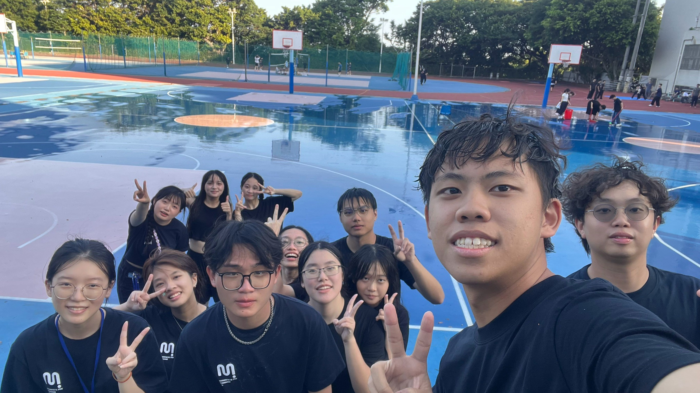
✔ 擔任系學會執行秘書與班代，並參與近 250 人的六系聯合迎新。
專案概述：
大學期間積極投入系學會運作，並參與跨科系之大型百人活動籌備。透過不同職務的歷練，練習專案管理、資源協調與文書處理。
核心貢獻與軟實力展現：
個人經驗：從行政幕後到現場關主，我看見一場活動背後有多少人與細節在運作。
我學到的東西：行政與文書處理、跨部門溝通，以及服務與帶領他人的態度。
我負責的部分：執行秘書：會議紀錄、特約商店洽談與公關講稿、二手書拍賣支援；迎新「船長密令」關主；班代：訊息傳達與意見彙整。
我的反思：資訊沒有說清楚、也沒有留下紀錄，就容易產生誤會。
下次我會怎麼做：會議結束當天整理紀錄，標出負責人與期限並發送給所有人，下次會議開頭先回顧上次的待辦事項。
✔ 完成《紅舞鞋》劇本改編與創意錄音，我負責專案統籌與劇本編輯。
專案概述：
於多媒體科技概論課程中，以安徒生的《紅舞鞋》童話故事進行劇本改編，與組員一同完成創意錄音。
核心貢獻與團隊協作：
個人經驗：把童話改編成劇本，再與組員一起把文字做成聲音作品。
我學到的東西：專案分工、版本管理觀念、Audacity 後製，以及時間壓力下的溝通。
我負責的部分：專案統籌與劇本編輯、依專長分配配音／音效／後製、預先規劃音效節點並找開源素材。
我的反思：組員使用舊版劇本錄音，我們靠調整後製策略補救，也讓我意識到版本確認要在一開始就說清楚。
下次我會怎麼做：專案初期建立單一共用劇本檔與版本命名規則（如 v1、v2），每次修改都通知全員並請對方回覆確認。